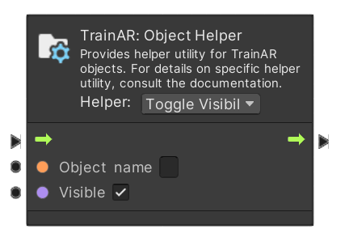
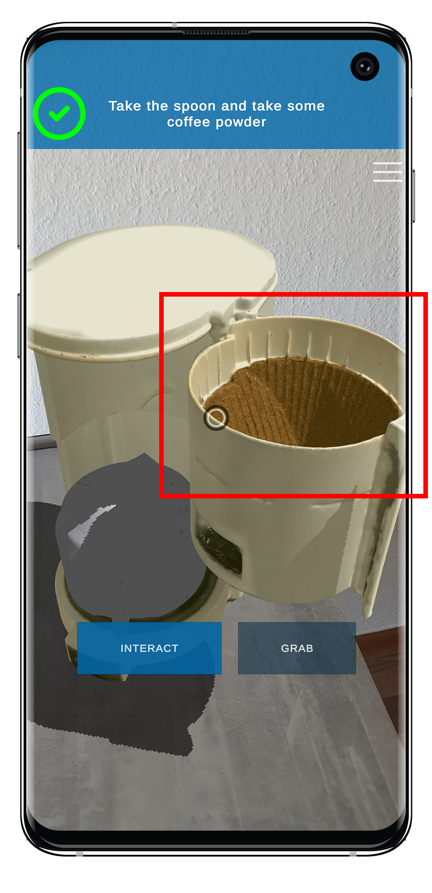

Object Helper Node
As specified in the TrainAR Objects documentation, TrainAR Objects have states and behaviours. The Object Helper nodeprovides various options to access and modify these from within the TrainAR Stateflow at runtime of the TrainAR training. In the Helper dropwodn menu you can select from the different options. To specifiy which TrainAR Object in the scene you want to modify, specify the exact Object name in the node.
| TrainAR Node | Result |
|---|---|
|  |  |
Toggle Visibility
Check or uncheck the Visible field to make the specified TrainAR Object visible or invisible.
Toggle Grabbable
Check or uncheck the Grabbable field to make the specified TrainAR Object grabbable or not grabbable.
Toggle Interactable
Check or uncheck the Interactable field to make the specified TrainAR Object interactable or not interactable.
Toggle Combinable
Check or uncheck the Combinable field to make the specified TrainAR Object combinable or not combinable.
Change Interaction text
Changes the labeling of the interaction button when selecting an TrainAR Object. A TrainAR Object is selected when you aim at a TrainAR Object and move close to it.
By default the labeling is simply Interact for every TrainAR Object.
Change Lerping distance
This changes the distance with which a grabbed TrainAR Object floats away from the screen. Generally, you probably want to have bigger TrainAR Objects float at a larger distance than smaller ones. That way, they don't cover the whole screen while grabbing them.
Change Mesh and Texture
With this option, you can change what a TrainAR Object looks like by changing it's mesh and/or material. This is for example useful if as a result of a combination or interaction an object is supposed to be altered.
Get Object Reference
This node returns the Unity GameObject Reference of the specified TrainAR Object. For more information about Unity GameObjects, refer to the Unity Documentation. This is mainly useful if you want to utilize Unitys Visual Scripting nodes in the Stateflow as specified in the Advanced Options.
Fuse Two Objects
This attaches one TrainAR Object to another, making them one. The Object name field specifies the object that is fused onto the object, which is specified in the Fuse to Object field. In the Offset Position and Rotation field the position and rotation relative to the fused with TrainAR Object is specified.
Destroy Object
Destroys and removes the specified TrainAR Object from the scene.